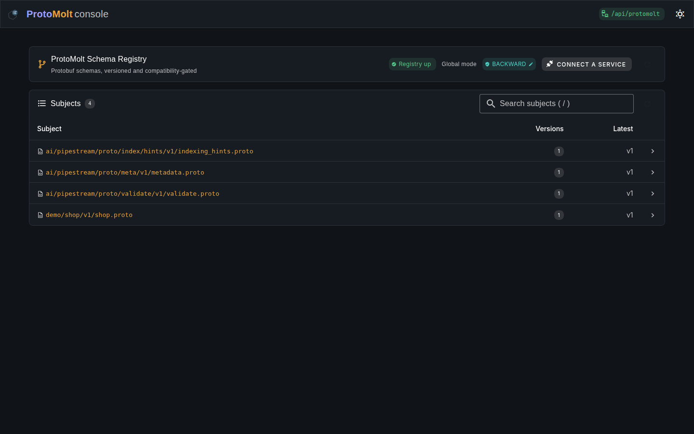

Schema intelligence
Gather and compile proto sources at runtime. Resolve descriptors from Git, Maven, jars, filesystems, and schema registries. Compare versions with typed compatibility findings.
Descriptor-first protobuf infrastructure
ProtoMolt loads schemas, validates and transforms messages, exposes dynamic services, and keeps schema history in Git. Everything works from protobuf descriptors, without requiring generated classes.
The demo starts the gRPC service with reflection, a JSON/REST gateway, Swagger UI, the MCP endpoint, the console, and a Git-backed registry with a sample schema already loaded.
docker run -p 8080:8080 -p 9090:9090 ghcr.io/ai-pipestream/protomolt-serve --demolocalhost:8080/console
localhost:8080/docs
grpcurl -plaintext localhost:9090 list
Prefer a local process? Release archives need only a JRE 21+ installation. See all run options.
ProtoMolt treats descriptors and their metadata as operational inputs. The same schema can guide validation, compatibility, transformation, transport, indexing, and service discovery.
Gather and compile proto sources at runtime. Resolve descriptors from Git, Maven, jars, filesystems, and schema registries. Compare versions with typed compatibility findings.
Work with DynamicMessage as naturally as generated types. Reflect on live gRPC services, invoke methods without stubs, and expose operations through Java, gRPC, REST, MCP, and Kafka Connect.
Carry validation, sensitivity, JSON, and indexing intent on protobuf descriptors. Build integrations from declared schema policy instead of duplicating it in each downstream system.
The complete v1.2.2 suite passes, 2,872 of 2,872 cases, and CI re-scores it with Buf's own conformance runner.
Included integration Protobuf-native search indexingDescriptor hints drive documents and schema artifacts for Lucene, OpenSearch, Solr, and Microsoft Graph search, including vector and HNSW configuration.
ProtoMolt is a collection of focused Java modules under one BOM. Start with descriptor loading or validation, then add registry, API, search, streaming, or code-generation support without adopting a monolith.
Load descriptor sets or compile proto text gathered from directories, jars, Git repositories, Maven coordinates, Confluent-compatible registries, and Apicurio Registry.
Store schema subjects and versions as Git commits, serve the Confluent subjects protocol, gate writes by compatibility mode, and retrieve binary descriptor sets for runtime consumers.
Validate protovalidate-annotated schemas unchanged, with the complete upstream conformance suite passing. Read declared metadata for sensitivity, mapping, JSON representation, and downstream indexing policy, and act on it — masking fields by sensitivity class, whether removed, redacted, or AES-GCM encrypted.
Reshape messages with text rules and CEL, derive and merge message shapes, infer schemas from structured data, and verify typed compositions of gRPC calls — including keyed joins over two live streams — before execution.
Map protobuf messages directly for Lucene, OpenSearch, Solr, and Microsoft Graph search, or emit engine-neutral NDJSON. Drive dynamic gRPC methods from Kafka topics and feed topics from server streams, with protobuf-aware validation, mapping, and filtering as in-pipeline transforms.
Convert descriptors to Iceberg table schemas and back, and commit batches of messages as real table snapshots written by ProtoMolt's own Hadoop-free Parquet emitter. Per-file column metrics let engines prune scans; tables can partition by identity, time, bucket, or truncate; an S3FileIO path reaches any S3-compatible store; and a Kafka Connect sink lands topics as snapshots.
Read and write OneDrive and SharePoint files and list-item metadata, and register agentless Copilot connectors — all over the public Microsoft Graph REST API, with no Microsoft SDK and no Windows agent. Graph search is the fourth target for the same indexing hints.
Render schemas into file bundles delivered to a caller-named sink — a directory, a Git commit, or an in-memory zip — including an Open Knowledge Format renderer for agent-consumable documentation and a descriptor-driven Parquet emitter that carries zero Hadoop jars.
Reflect on and invoke live gRPC services without generated stubs. Serve a descriptor-native API over gRPC and REST, expose it to agents through MCP, or generate clients in process with the embedded WASM toolchain.
A shared capability model
Twenty-three verbs are described as typed actions with machine-readable input and output schemas. Hosts adapt that one catalog to the interface that fits the caller, while the descriptor-driven implementation stays the same.
The console is built into the server. Browse subjects and versions, inspect message types and declared options, compare schema changes, validate messages, merge schemas, run chains, or connect a live gRPC service.

The bundled server is the fastest way to explore ProtoMolt. The same capabilities are available as ordinary Java dependencies for embedding into an existing service.
ProtoGatherer gatherer = GitProtoGatherer.builder()
.repo("https://github.com/acme/schemas.git")
.ref("main")
.subdir("proto")
.build();
var descriptors = DescriptorRegistry.create();
descriptors.addLoader(
new GatheringDescriptorLoader(gatherer)
);dependencies {
implementation platform(
'ai.pipestream:protomolt-bom:<version>'
)
implementation(
'ai.pipestream:protomolt-descriptors'
)
implementation(
'ai.pipestream:protomolt-mapper-cel'
)
}Built in the open
ProtoMolt is Apache-2.0-licensed. Its standard build covers the module suite, and dedicated CI exercises protovalidate conformance and live schema-registry integrations.
{kind=link}
{kind=link}
{kind=link}
{kind=link}
{kind=link}
{kind=link}
{kind=link}